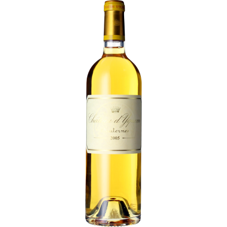
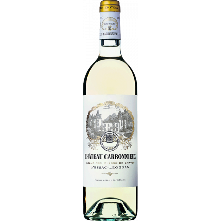

Ce millésime 2022 du Château Grand Jean est un véritable coup de cœur.
L'équilibre du mariage du sauvignon blanc, du gris et du sémillon assure une explosion
de fruits exotiques et de fleurs blanches en bouche. Grâce à une vinification maîtrisée,
le vin est à la fois tendu et ample. Le vin blanc parfait pour un apéritif à un prix très sage !
450 €

Château d'Yquem
1er Cru Classé 2005
Ce 2005 est à la fois gourmand et rafraîchissant, intense et ciselé, les contrastes fondent en harmonie.
Il donne une sensation délicieusement pure, avec des saveurs juteuses et invitantes de prune verte,
de gingembre, de bruyère et de pomme Jonagold qui se confondent et glissent à travers
la longue finale avec ses notes d'agrumes séchées.
1800 €

Château Carbonnieux
Graves 2021
Le Château Carbonnieux Blanc 2021 a un nez très aromatique avec des notes de melon mûr, de pêche et d'agrumes.
La bouche est concentrée et riche, nuancée de notes de zeste d'agrumes et de pain grillé,
avec une belle fraîcheur en finale. Déjà très séduisant et équilibré, il peut être dégusté dès maintenant
ou conservé en cave !